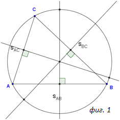

Определение 1: Окръжността, която мина през върховете на триъгълника АBC, се нарича описана около този триъгълник.
|  |
| фигура 1. |
T1: Симетралите се пресичат в една точка, която е центърът на описана около триъгълник, окръжност.
T2: Около триъгълник може да се опише единствена окръжност, центърът й е пресечната точка на симетралите на страните на триъгълника.